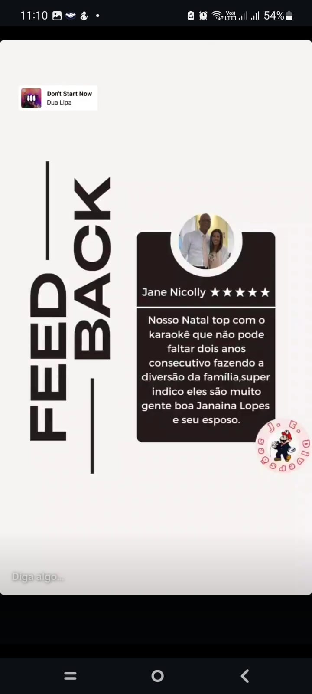
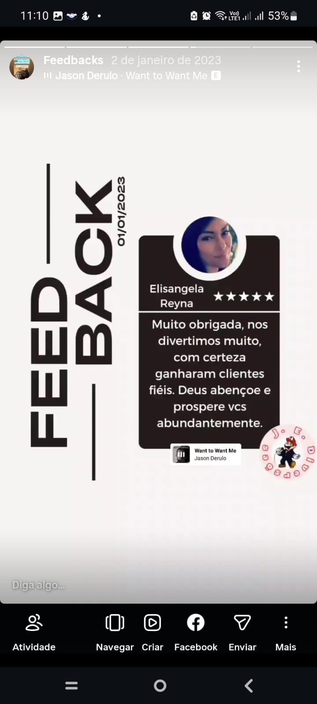
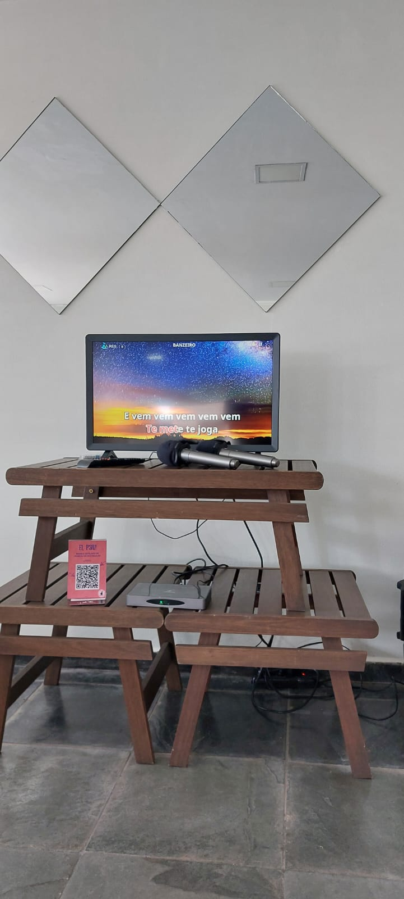
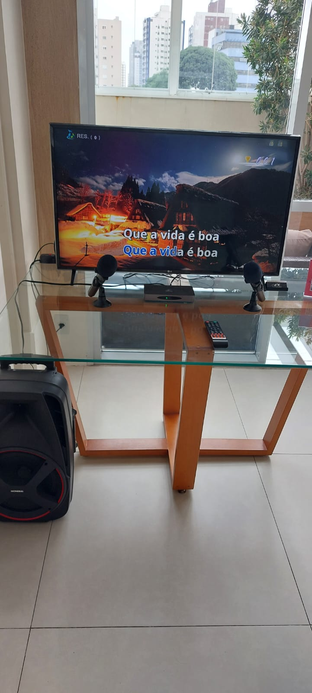

Prático e econômico
Ideal para quem quer colocar a galera para cantar com uma estrutura objetiva.
- 2 microfones: 1 sem fio e 1 com fio
- Fila de músicas
- Pontuação ao final da música
- Kit completo de instalação J.E.
A J.E. Diversões monta tudo, testa o equipamento, explica o uso e retorna no horário combinado para retirada.
Um fluxo simples para o cliente contratar com segurança e para a J.E. organizar a locação sem retrabalho.
Bronze, Prata ou Ouro, conforme a experiência desejada.
O atendimento começa pelo WhatsApp para confirmar disponibilidade e detalhes.
Após fechar, enviamos o formulário para coletar os dados do contrato.
O cliente deixa mesa, tomada e TV própria preparada, quando necessário.
A J.E. instala, testa e explica o uso do equipamento.
Após o evento, retornamos no horário combinado para retirada.
Os pacotes incluem o kit completo de funcionamento do equipamento J.E.: aparelho, caixa de som e cabeamentos necessários para a instalação do nosso sistema. Caso o cliente utilize equipamentos próprios diferentes, os acessórios e compatibilidades desses itens devem ser providenciados pelo cliente.
O convidado acessa o catálogo do pacote contratado pelo celular.
Todos os pacotes permitem organizar a sequência de músicas.
Todos exibem a pontuação ao final da canção.

Na Home, priorizamos a experiência. Os valores são confirmados no atendimento, conforme pacote, data, local e adicionais.
Ideal para quem quer colocar a galera para cantar com uma estrutura objetiva.
O pacote ideal para deixar a disputa mais divertida durante a apresentação.
A experiência completa para transformar o karaokê em batalha entre participantes.
Diferenças principais entre os pacotes.
Alguns itens não fazem parte do pacote base e podem ser adicionados à locação mediante disponibilidade e alteração de valores.
Para eventos em que o cliente deseja incluir a tela na locação.
Apoio próprio para montagem da televisão quando necessário.
Complemento para deixar o ambiente mais animado.
Um extra para ampliar a diversão dos convidados.
Feedbacks reais recebidos pela J.E. Diversões.
“Nosso Natal top com o karaokê que não pode faltar dois anos consecutivos fazendo a diversão da família. Super indico.”

“Muito obrigada, nos divertimos muito. Com certeza ganharam clientes fiéis.”

Quando o cliente recomenda, o serviço vende com mais força.
Algumas estruturas montadas em eventos.



Para que a montagem seja rápida e sem atrasos, o espaço precisa estar preparado.
Reserve uma tomada 110V próxima ao local onde o equipamento será instalado.
Deixe uma mesa pronta para acomodar o aparelho e os acessórios.
Se a TV não foi contratada com a J.E., confira antes se ela possui entrada HDMI funcionando.
Tenha uma pessoa responsável para acompanhar a instalação e receber as orientações de uso.
Não necessariamente. A TV pode ser contratada como adicional. Caso o cliente utilize TV própria, ela deve possuir entrada HDMI funcionando.
Não. A J.E. monta, testa, explica o uso e retorna no horário combinado para retirada. A operação é simples e feita pelo próprio cliente/convidados.
Mesa, tomada 110V próxima, espaço livre e TV própria com HDMI funcionando, caso não tenha contratado a TV da J.E.
Sim. Todos mostram pontuação ao final da música. Prata e Ouro também possuem pontuação real em tempo real. O Ouro inclui modo Versus.
Fale pelo WhatsApp para consultar disponibilidade da data e montar sua locação.